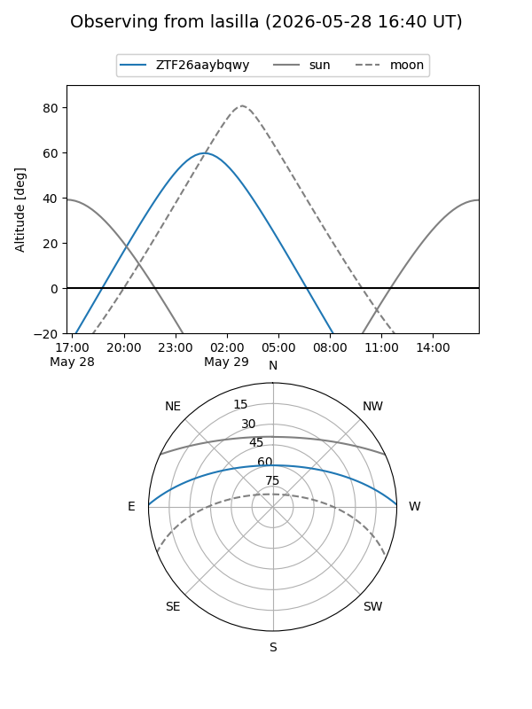
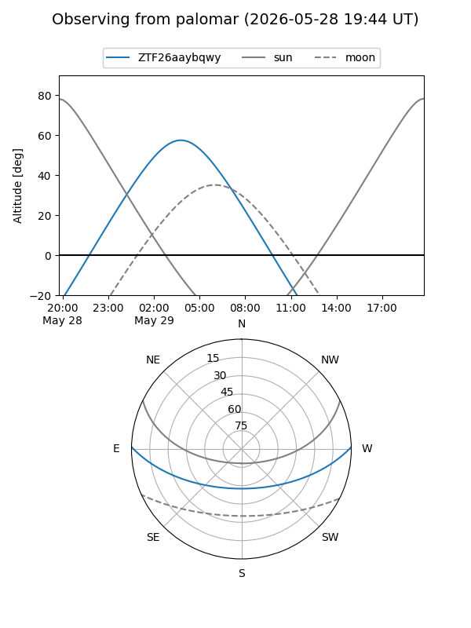

ZTF26aaybqwy
Target ZTF26aaybqwy at 2026-05-29 12:16
Aliases and brokers:
lsst-FINK: link
lsst-Lasair: link
lsst-ALeRCE: link
ztf-FINK: link
ztf-Lasair: link
ztf-ALeRCE: link
alt names
ZTF26aaybqwy (ztf,fink_ztf)
Coordinates:
equatorial (ra, dec) = 185.9658,+1.05617
equatorial (HMS+DMS) = 12:23:51.80,+01:03:22.20
galactic (l, b) = (287.5496,+63.10144)
Flags:
Photometry:
last ztfg=18.26
2 ztfg detections
Lightcurve
Visibility


Additional plots